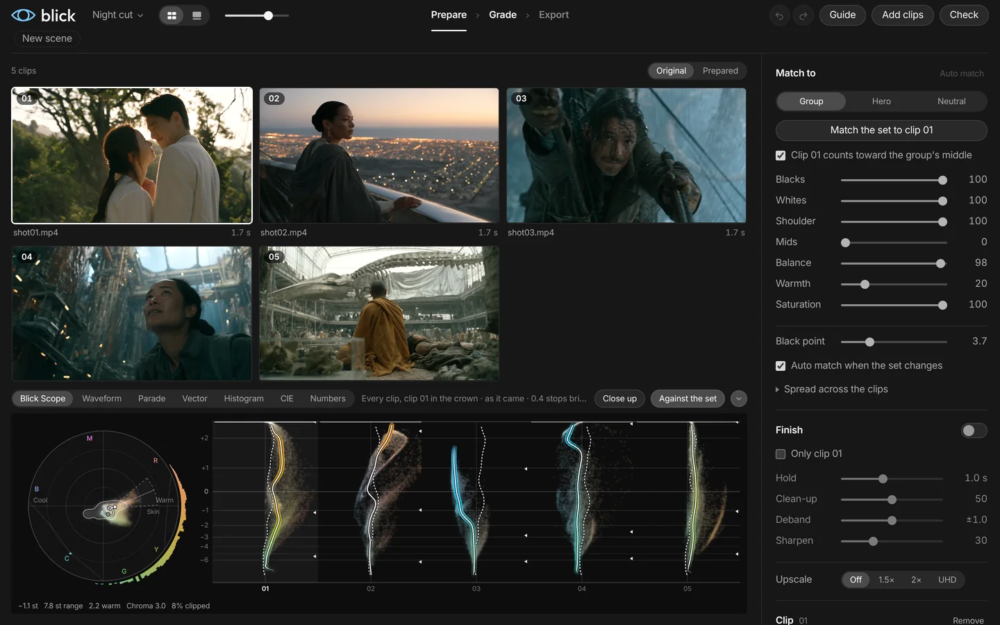
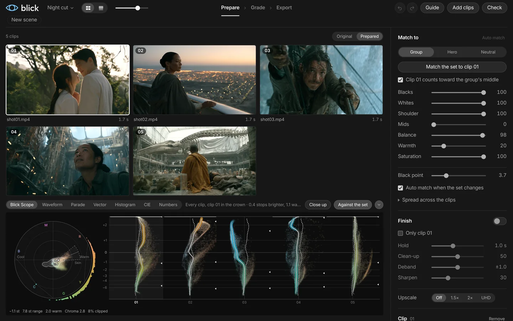
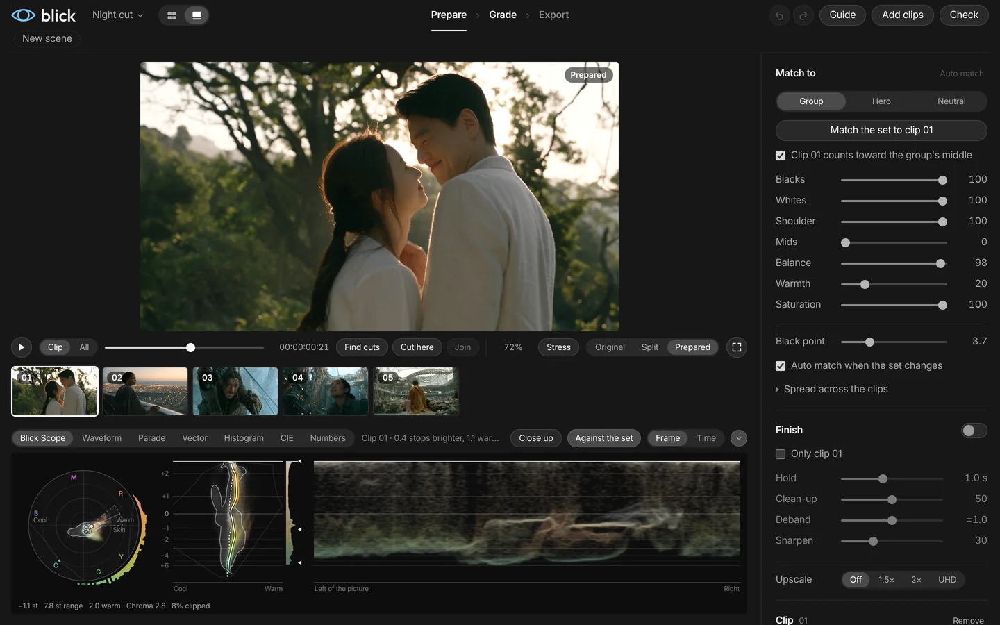

Prepare
Many clips.
One film.
Every generated clip comes out of its own render with its own idea of black, white and color. Prepare measures them all and brings the set together before a single look is put on it.


The match
It measures every clip.
Then it decides how little to do.
A match that treats every clip alone tears scenes apart. So Blick holds the set together first. Clips that look alike as they come are one scene and get one and the same correction. Every measurement has a band inside which a clip is left alone. Only what is truly off is brought back.
- One scene, one correction Blick 3.5
- Measured on fourteen generated clips, each cut into two shots: the two halves leave Prepare 0.3 apart, on a scale where 1 is about the smallest difference an eye sees.
- Never crush Blick 3.5
- Black is set by the brightness of a clip's darkest pixels, and the whole black is eased together. A deep blue or a gold in the shadows no longer turns the blacks magenta.
- Three ways to match
- Group moves every clip to the middle of the set. Hero moves them to one clip you pick. Neutral keeps the set's own levels and takes the color out of the blacks.
- Auto match
- The match is made again by itself whenever the set changes, and its strengths are yours: Blacks, Whites, Shoulder, Mids, Balance, Warmth, Saturation and the black point.
- A clip's own trims
- Where two shots show different things and were graded a little differently, no measurement can tell which is right. Each clip has sliders of its own for that.
- Scenes Blick 3.6
- Select the clips that belong together and make them a scene. A scene has its own match: its way of matching, its strengths, its hero and its black point.
Finish
Take the generated look
off the picture.
A level that breathes. Grit in the shadows. A sky in steps. Finish is one switch for the cut, or for a single clip, with five things behind it. None of them repaints the picture: they steady, clean and rebuild what is there.
- Hold
- Keeps level and color steady over time, so a clip stops pulsing.
- Clean-up
- Takes out noise and the fine grit a generator leaves.
- Deband
- Rebuilds smooth ramps where a sky or a wall has broken into steps.
- Sharpen
- Lifts the edges, as much as you ask.
- Upscale
- 1.5 times, 2 times, or up to UHD. The viewer's 100% is then one pixel of the finished picture on one pixel of your screen.
- Stress
- A view that stretches the contrast round the picture's own level, so banding and noise show before your audience finds them. Display only.
Check
What an eye would stop at,
found before the screening.
One press goes through every clip of the set. Each thing found has its clip and its timecode, and a click goes there. What Blick can put right has Fix beside it. What it cannot is listed for whoever makes the clip again.
- In the picture
- A level that pulses, noise, skies that can band, clipped tones.
- In time
- Frames that repeat, and a cut hiding inside a clip.
- Hands
- A hand whose bones change length from one frame to the next is changing shape. Check points at the frames worth a look.
- In the set
- Clips whose frame rate or size is not the set's.
Cuts and the viewer
A file is not always
one shot.
Give Blick a whole film as one file and it finds the shots in it. Each shot then gets its own match and can wear its own look.

- Find cuts, Cut here, Join
- Find cuts splits a file into its shots. Cut here makes one where the playhead is, and Join takes one out.
- One zoom everywhere
- Pinch, or hold Cmd and scroll, to zoom in where the pointer is. A number says the size and is the way to full size and back. F shows only the picture.
- Exact frames
- Every press of a frame step is one frame, and none is passed over. Run the pointer across a tile to run through its clip. Original, Split and Prepared stand beside the picture.
- As many clips as you need to see Blick 3.6
- A slider in the bar sets the size of the clips, in Prepare and in Grade. Two clicks fit every clip again.
- Blick Scope
- One scope for color and light: every clip a plume, dark at the foot and light at the top. Clips that match have the same shape at the same height.
- Right-click Blick 3.6
- On a clip, the viewer, a scene or a slider: show the file, copy and paste a clip's settings, make a scene from what is selected.